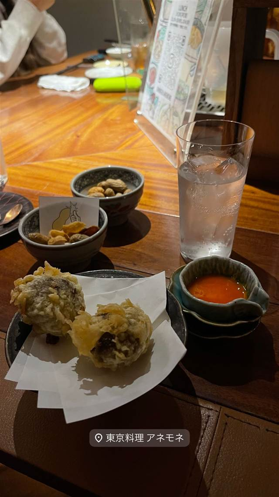

東京料理 アネモネ
池尻「保月」出身の店主が作る、うにパフェもある東京料理
東京料理 アネモネ
神泉・裏渋谷にある居酒屋「東京料理 アネモネ」。池尻の「保月」で経験を積んだ店主が、和食と居酒屋の定番メニューをジャンルレスに進化させた独自の「東京料理」を提供している。
TRIVIA
豆知識
- 店主は池尻の「保月」という店の出身
REVIEWS
世間の評判
3.31食べログ
多彩な酒と落ち着いた雰囲気
- 日本酒や焼酎など珍しいお酒の品揃えの豊富さを評価する声が多い
- 隠れ家的で落ち着いた雰囲気がデートや女子会に合うと評価される
- ランチタイムはワンオペで客への対応が大変そうだという指摘がある
食べログ
| 系譜 | 店主は以前、池尻で「保月」という店を営んでいた経験を持つ。 |
|---|---|
| 看板 | うにパフェ、鴨と壬生菜の鍋、京だしの鴨しゃぶなど |
| こだわり | 和食の技術を取り込みつつ、定番の和食・居酒屋メニューをジャンルレスに再構成している。 |
| どこから | 都心 |
| 営業時間 | 月〜土 17:30-02:00 日 休み |
| 予算 | 昼 ¥1,000～¥1,999 夜 ¥5,000～¥5,999 |
| 定休日 | 月曜 |
| 予約 | 予約可 |
| 場所 | 神泉（徒歩約4分） 東京都渋谷区神泉町 |
| メモ | 神泉駅から徒歩約4分、裏渋谷通り沿いのビル1階。営業は深夜26時頃まで。 |
食べたもの：揚げ物小皿
NEARBY
近い店・同じ系統の店
-
 ブランチ 神泉（南口徒歩約2分）
The3rd.Shibuya
南国リゾート風の店内、女性シェフのフレンチトーストが人気
昼 ¥2,000～¥2,999 夜 ¥3,000～¥3,999
ブランチ 神泉（南口徒歩約2分）
The3rd.Shibuya
南国リゾート風の店内、女性シェフのフレンチトーストが人気
昼 ¥2,000～¥2,999 夜 ¥3,000～¥3,999
-
 ワインバー 神泉
ANDs.
契約農家の国産食材と、黒板に並ぶ十数種のグラスワインが自慢
夜 ¥5,000～¥5,999
ワインバー 神泉
ANDs.
契約農家の国産食材と、黒板に並ぶ十数種のグラスワインが自慢
夜 ¥5,000～¥5,999
-
 ワインバー 神泉
neo（ネーオ）
元焼き鳥屋を改装、予約不要で楽しむイタリアンナチュラルワイン
夜 ¥4,000～¥4,999
ワインバー 神泉
neo（ネーオ）
元焼き鳥屋を改装、予約不要で楽しむイタリアンナチュラルワイン
夜 ¥4,000～¥4,999
-
 ハンバーガー 神泉駅
Chillmatic Hamburger & Bistro
仕込みに6日かける自家製パストラミのチーズバーガー
昼 ¥2,000～¥2,999 夜 ¥2,000～¥2,999
ハンバーガー 神泉駅
Chillmatic Hamburger & Bistro
仕込みに6日かける自家製パストラミのチーズバーガー
昼 ¥2,000～¥2,999 夜 ¥2,000～¥2,999
-
 ビストロ 神泉
かしわビストロ バンバン
近江黒鶏を毎日直送、甘辛い炭火焼きが看板
夜 ¥4,000～¥4,999
ビストロ 神泉
かしわビストロ バンバン
近江黒鶏を毎日直送、甘辛い炭火焼きが看板
夜 ¥4,000～¥4,999
-
 鶏白湯 神泉
鶏そば・ラーメン Tonari
昼は鶏そば、夜は牡蠣ラーメンに変わる二毛作
昼 ～¥999 夜 ¥2,000～¥2,999
鶏白湯 神泉
鶏そば・ラーメン Tonari
昼は鶏そば、夜は牡蠣ラーメンに変わる二毛作
昼 ～¥999 夜 ¥2,000～¥2,999
ONSEN & SAUNA